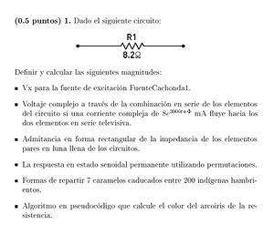

FFI
 De: La Frikipedia, la enciclopedia extremadamente seria.
De: La Frikipedia, la enciclopedia extremadamente seria.
 Típica pregunta de examen de FFI
La asignatura de Fundamentos físicos de la informática, también conocida En Junio nos vemos es un arma de destrucción masiva nacida en la ESI de Cádiz cuando, en un brote psicótico, alguien decidió que los alumnos de informática tenían demasiado tiempo libre por la tarde.
Beneficios de la asignatura
Los alumnos de FFI dan gracias a Dios todos los días, porque con ella han aprendido a ser personas de bien, gracias a los valores que inculca la asignatura.
- Dado el horario, que tras seis horas de clase matinales te obliga a venir otras dos por la tarde, los alumnos son capaces almorzar a horas intempestivas o mantenerse sin comer bocado de ocho de la mañana a ocho de la tarde. Muy útil en épocas de sequía y hambruna.
- La asignatura carece de recursos tales como apuntes o exámenes de otros años, para que los alumnos sepan cómo se estudiaba en la dura y fría estepa rusa y así estén curtidos para la vida real.
- Los alumnos de FFI están preparados para todo. Pueden responder tanto a las características del movimiento de una partícula en una botella magnética, como a la frecuencia de apareamiento del cangrejo moro durante el solsticio de verano. Y usando la calculadora del móvil, oiga.
- A pesar de ser una asignatura amena y dinámica, también tiene su parte seria. Y es que es la única asignatura en la que se somete a los alumnos a un riguroso registro antes y después de los exámenes, con detectores de chuletas y listas de espera para entrar a la clase de hasta veinte minutos.
Frikipedia 2005-2016, Licencia
GFDL 1.2 - Extraído por FrikiLeaks